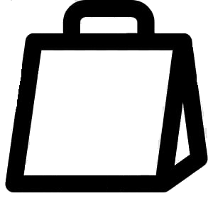
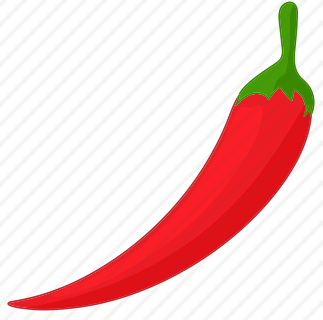

Tervetuloa Kiinalaiseen ravintolaan Dragon Gloryyn Itikseen!
Olemme palvelleet Dragon Gloryssa asiakkaita vuodesta 2007 lähtien.
Ravintolamme sijaitsee hyvien kulkuyhteyksien varrella,
Itäkeskuksen metro- ja linja-autoaseman yhteydessä.
Menustamme löytyy laaja ruokavalikoima, yli 100 erilaista ruoka-annosta.
Ruokiamme voi nauttia paikan päällä tai tilata take awaynä.
Arkisin 14 päivittäin vaihtuvaa lounasta alkaen 8,50€.
Ravintolassa syötäessä lounas sisältää
keiton tai kevätrullan klo asti.
Tervetuloa Kiinalaiseen ravintolaan
Dragon Gloryyn Itikseen!
Olemme palvelleet Dragon Gloryssa
asiakkaita vuodesta 2007 lähtien.
Ravintolamme sijaitsee
hyvien kulkuyhteyksien varrella,
Itäkeskuksen metro- ja
linja-autoaseman yhteydessä.
Menustamme löytyy laaja ruokavalikoima,
yli 100 erilaista ruoka-annosta.
Ruokiamme voi nauttia paikan päällä
tai tilata take awaynä.
Arkisin 14 päivittäin vaihtuvaa lounasta
alkaen 8,50€.
Ravintolassa syötäessä lounas sisältää
keiton tai kevätrullan klo asti.
Menu
1. 春卷
Kevätrulla / Vihanneskevätrulla (2 kpl)
Spring-roll / Vegetables spring-roll (2 pieces)
4,00€ |  4,00€
2. 云吞汤
Won Ton keitto
Won Ton soup
4,00€ | 4,00€
3. 北京汤
Pekingin keitto 
Beijing soup
4,00€ | 4,00€
4. 粟米鸡汤
Kanamaissikeitto
Chicken soup with sweet corns
4,00€ | 4,00€
5. 番茄牛肉汤
Naudanlihatomaattikeitto
Beef soup with tomatoes
4,00€ | 4,00€
6. 什菜汤
Vihanneskeitto
Vegetable soup
3.50€ | 3.50€
7. 冬菇鸡汤
Kanavihanneskeittoa kiinalaisilla sienillä
Chicken soup with vegetables and chinese mushrooms
4,00€ | 4,00€
8. 海鲜汤
Äyriäiskeitto
Seafood soup
6,00€ | 6,00€
9. 东荫汤
Tom Yum keitto
Tom Yum soup
4,00€ | 4,00€
10. 酸辣豆腐汤
Tulinen ja hapan tofukeitto
Tofu hot and sour soup
4,00€ | 4,00€
11. 炸虾片
Friteerattuja katkarapulastuja
Deep fried shrimp chips
3.50€ | 3.50€
12. 炸云吞
Friteerattuja Won Toneja
Deep fried Won Tons
4,00€ | 4,00€
13. 鸡面汤
Kananuudelikeitto
Chicken noodle soup
4,00€ | 4,00€
Piilota alkuruoat - Hide appetizers
14. 什菜鸡
Kanaa ja vihanneksia
Chicken and vegetables
9,50€ | 9,00€
15. 磨菇竹笋鸡
Kanaa, sieniä ja bambuversoja
Chicken with mushrooms and bamboo shoots
9,50€ | 9,00€
16. 冬菇竹笋鸡
Kanaa, kiinalaisia sieniä ja bambuversoja
Chicken with chinese mushrooms and bamboo shoots
10,00€ | 9,50€
17. 腰果鸡
Kanaa ja cashewpähkinöitä
Chicken with cashew nuts
10,50€ | 10,00€
18. 豉椒鸡
Kanaa mustapapukastikkeessa
Chicken in black bean sauce
9,50€ | 9,00€
19. 菠萝鸡
Kanaa ja ananasta
Chicken with pineapple
9,50€ | 9,00€
20. 广东鸡
Kantonin-kanaa hapanimeläkastikkeessa
Cantonese chicken in sweet and sour sauce
10,00€ | 9,50€
21. 西柠鸡
Kanaa sitruunakastikkeessa
Chicken in lemon sauce
10,00€ | 9,50€
22. 黑椒鸡
Paistettua kanaa mustapippurikastikkeessa
Fried chicken in blackpepper sauce
9,50€ | 9,00€
23. 北京鸡
Pekingin kanaa
Beijing chicken
9,50€ | 9,00€
24. 东荫鸡
Tom Yum kanaa
Tom Yum chicken
9,50€ | 9,00€
25. 宫保鸡
Kung Po kanaa
Kung Po chicken
10,00€ | 9,50€
26. 蒜汁鸡
Kanaa valkosipulikastikkeessa
Chicken in garlic sauce
9,50€ | 9,00€
27. 辣汁鸡
Kanaa chilikastikkeessa
Chicken in chili sauce
9,50€ | 9,00€
28. 沙嗲鸡
Kanaa sataykastikkeessa
Chicken in satay sauce
9,50€ | 9,00€
29. 洋葱鸡
Kanaa ja sipulia
Chicken and onions
9,50€ | 9,00€
30. 四川鸡
Szechuen kanaa
Szechuen chicken
9,50€ | 9,00€
31. 炸鸡
Friteerattua kanaa ja hapanimeläkastiketta
Deep fried chicken with sweet and sour sauce
9,50€ | 9,00€
A1. 咖喱鸡
Kanaa currykastikkeessa
Chicken in curry sauce
9,50€ | 9,00€
Piilota kana - Hide chicken
32. 什菜牛
Naudanlihaa ja vihanneksia
Beef with vegetables
10,00€ | 9,50€
33. 磨菇竹笋牛
Naudanlihaa, sieniä ja bambuversoja
Beef with mushrooms and bamboo shoots
10,00€ | 9,50€
34. 洋葱牛
Naudanlihaa ja sipulia
Beef with onion
10,00€ | 9,50€
35. 豉椒牛
Naudanlihaa mustapapukastikkeessa
Beef in black bean sauce
10,00€ | 9,50€
36. 四川牛
Szechuen nautaa
Szechuen beef
10,00€ | 9,50€
37. 宫保牛
Kung Po naudanlihaa
Kung Po beef
10,50€ | 10,00€
38. 北京牛
Peking naudanlihaa
Beijing beef
10,00€ | 9,50€
39. 辣汁牛
Naudanlihaa chilikastikkeessa
Beef in chili sauce
10,00€ | 9,50€
40. 咖喱牛
Naudanlihaa currykastikkeessa
Beef in curry sauce
10,00€ | 9,50€
41. 蒜汁牛
Naudanlihaa valkosipulikastikkeessa
Beef in garlic sauce
10,00€ | 9,50€
42. 沙嗲牛
Naudanlihaa sataykastikkeessa
Beef in satay sauce
10,00€ | 9,50€
43. 东荫牛
Tom Yum naudanlihaa
Tom Yum beef
10,00€ | 9,50€
44. 冬菇竹笋牛
Naudanlihaa, kiinalaisia sieniä ja bambuversoja
Beef with chinese mushrooms and bamboo shoots
10,50€ | 10,00€
45. 黑椒牛
Paistettua nautaa mustapippurikastikkeessa
Fried beef in blackpepper sauce
10,00€ | 9,50€
Piilota Naudanliha - Hide Beef
46. 冬菇竹笋猪
Porsaanlihaa, kiinalaisia sieniä ja bambuversoja
Pork with chinese mushrooms and bamboo shoots
10,00€ | 9,50€
47. 北京猪
Pekingin porsaanlihaa
Beijing pork
9,50€ | 9,00€
48. 蘑菇竹笋猪
Porsaanlihaa, sieniä ja bambuversoja
Pork with mushrooms and bamboo shoots
9,50€ | 9,00€
49. 广东猪
Kantonin porsaanlihaa hapanimeläkastikkeessa
Cantonese pork in sweet and sour sauce
10,00€ | 9,50€
50. 蒜汁猪
Porsaanlihaa valkosipulikastikkeessa
Pork in garlic sauce
9,50€ | 9,00€
51. 沙嗲猪
Porsaanlihaa sataykastikkeessa
Pork in satay sauce
9,50€ | 9,00€
52. 炸猪
Friteerattua porsaanlihaa ja hapanimeläkastiketta
Deep fried pork with sweet and sour sauce
9,50€ | 9,00€
53. 洋葱叉烧
Grillattua porsaanlihaa ja sipulia
Roast pork with onions
9,50€ | 9,00€
54. 四川叉烧
Szechuen grillattua porsaanlihaa
Szechuen roast pork
9,50€ | 9,00€
55. 辣汁叉烧
Grillattua porsaanlihaa chilikastikkeessa
Roast pork in chili sauce
9,50€ | 9,00€
Piilota porsaanliha - Hide pork
56. 广东鱼
Kantonin kalaa hapanimeläkastikkeessa
Cantonese fish in sweet and sour sauce
9,50€ | 9,00€
57. 豉椒鱼
Kalaa mustapapukastikkeessa
Fish in black bean sauce
9,50€ | 9,00€
58. 辣汁鱼
Kalaa chilikastikkeessa
Fish in chili sauce
9,50€ | 9,00€
59. 冬菇竹笋鱼
Kalaa, kiinalaisia sieniä ja bambuversoja
Fish with chinese mushrooms and bamboo shoots
10,00€ | 9,50€
60. 什菜鱼
Kalaa ja vihanneksia
Fish with vegetables
9,50€ | 9,00€
61. 豉椒鲜鱿
Mustekalaa mustapapukastikkeessa
Squid in black bean sauce
10,50€ | 10,00€
62. 什菜鲜鱿
Mustekalaa ja vihanneksia
Squid and vegetables
10,50€ | 10,00€
63. 辣汁鲜鱿
Mustekalaa chilikastikkeessa
Squid in chili sauce
10,50€ | 10,00€
64. 腰果大虾
Jättikatkarapuja ja cashewpähkinöitä
King prawns with cashew nuts
15,00€ | 14,50€
65. 辣汁大虾
Jättikatkarapuja chilikastikkeessa
King prawns in chilisauce
14,00€ | 13,50€
66. 宫保大虾
Kung Po jättikatkarapuja
Kung Po king prawns
14,50€ | 14,00€
67. 咖喱大虾
Jättikatkarapuja currykastikkeessa
King prawns in curry sauce
14,00€ | 13,50€
68. 蒜汁大虾
Jättikatkarapuja valkosipulikastikkeessa
King prawns in garlic sauce
14,00€ | 13,50€
69. 东荫大虾
Tom Yum jättikatkarapuja
Tom Yum king prawns
14,00€ | 13,50€
70. 四川大虾
Szechuen jättikatkarapuja
Szechuen king prawns
14,00€ | 13,50€
71. 炸大虾
Friteerattuja jättikatkarapuja ja hapanimeläkastiketta
Deep fried king prawns with sweet and sour sauce
14,00€ | 13,50€
Piilota merenantimet - Hide Seafood
72. 北京鸭
Peking grillattua ankkaa
Beijing roast duck
18,50€ | 18,00€
73. 四川鸭
Szechuen ankkaa
Szechuen duck
13,00€ | 12,50€
74. 香酥鸭
Rapeaa ankkaa
Crispy duck
13,00€ | 12,50€
75. 冬菇竹笋鸭
Ankkaa, kiinalaisia sieniä ja bambuversoja
Duck with chinese musrooms and bamboo shoots
13,50€ | 13,00€
76. 辣汁鸭
Ankkaa chilikastikkeessa
Duck in chili sauce
13,00€ | 12,50€
77. 西柠鸭
Ankkaa sitruunakastikkeessa
Duck in lemon sauce
13,50€ | 13,00€
Piilota ankka - Hide duck
78. 麻婆豆腐
Tofua jauhelihachilikastikkeessa
Tofu and meat in chili sauce
11,00€ | 10,50€
79. 什菜豆腐
Tofua ja vihanneksia
Tofu with vegetables
9,00€ | 8,50€
80. 冬菇竹笋豆腐
Tofua, kiinalaisia sieniä ja bambuversoja
Tofu with chinese mushrooms and bamboo shoots
9,50€ | 9,00€
81. 咖喱豆腐
Tofua currykastikkeessa
Tofu in curry sauce
9,00€ | 8,50€
82. 四川豆腐
Szechuen tofua
Szechuen tofu
9,00€ | 8,50€
83. 宫保豆腐
Kung Po tofua
Kung Po tofu
9,50€ | 9,00€
84. 辣汁豆腐
Tofua chilikastikkeessa
Tofu in chili sauce
9,00€ | 8,50€
85. 蒜汁豆腐
Tofua valkosipulikastikkeessa
Tofu in garlic sauce
9,00€ | 8,50€
Piilota tofu - Hide tofu
86. 炒什菜
Paistettuja vihanneksia
Fried mixed vegetables
9,00€ | 8,50€
87. 豉汁什菜
Vihanneksia mustapapukastikkeessa
Vegetables in black bean sauce
9,00€ | 8,50€
88. 辣汁什菜
Vihanneksia chilikastikkeessa
Vegetables in chili sauce
9,00€ | 8,50€
89. 四川什菜
Szechuen vihanneksia
Szechuen vegetables
9,00€ | 8,50€
90. 咖喱什菜
Vihanneksia currykastikkeessa
Vegetables in curry sauce
9,00€ | 8,50€
91. 蘑菇竹笋
Sieniä ja bambunversoja
Mushrooms and bamboo shoots
9,50€ | 9,00€
Piilota vihannekset - Hide vegetables
92. 什锦炒饭
Paistettua riisiä, lihaa ja katkarapuja
Fried rice with meat and shrimps
9,50€ | 9,00€
93. 鸡炒饭
Paistettua riisiä ja kanaa
Fried rice with chicken
9,50€ | 9,00€
94. 辣汁什锦炒饭
Paistettua riisiä, lihaa ja katkarapuja chilikastikkeessa
Fried rice with meat and shrimps chili sauce
9,50€ | 9,00€
95. 咖喱鸡炒饭
Paistettua riisiä ja currykanaa
Fried rice with curry chicken
9,50€ | 9,00€
96. 虾仔炒饭
Paistettua riisiä ja katkarapuja
Fried rice with shrimps
10,00€ | 9,50€
97. 什菜炒饭
Paistettua riisiä ja vihanneksia
Fried rice with mixed vegetables
9,50€ | 9,00€
98. 什锦炒面
Paistettuja nuudeleita, lihaa ja katkarapuja
Fried noodles with meat and shrimps
9,50€ | 9,00€
99. 鸡炒面
Paistettuja nuudeleita ja kanaa
Fried noodles with chicken
9,50€ | 9,00€
100. 咖喱鸡炒面
Paistettuja nuudeleita ja currykanaa
Fried noodles with curry chicken
9,50€ | 9,00€
101. 什菜炒面
Paistettuja nuudeleita ja vihanneksia
Fried noodles with vegetables
9,50€ | 9,00€
102. 什锦汤面
Nuudeleita, lihaa ja katkarapuja keitossa
Noodles, meat and shrimps soup
10,50€ | 10,50€
103. 馄饨汤面
Wontoneja ja nuudeleita keitossa
Wontons and noodles soup
10,50€ | 10,50€
104. 什锦炒米粉
Paistettuja riisinuudeleita, lihaa ja katkarapuja
Fried ricenoodles with meat and shrimps
10,00€ | 9,50€
105. 什菜炒米粉
Paistettuja riisinuudeleita ja vihanneksia
Fried ricenoodles with vegetables
10,00€ | 9,50€
106. 咖喱鸡炒米粉
Paistettuja riisinuudeleita ja currykanaa
Fried ricenoodles with curry chicken
10,00€ | 9,50€
107. 什锦汤米粉
Riisinuudeleita, lihaa ja katkarapuja keitossa
Ricenoodles, meat and shrimps in soup
11,00€ | 11,00€
108. 馄饨汤米粉
Wontoneja ja riisinuudeleita keitossa
Wontons and ricenoodles soup
11,00€ | 11,00€
109. 肠仔薯条
Nakkeja ja ranskalaisia (lasten ruoka)
French fries with wieners (for children)
6,50€ | 6,50€
炒饭
Paistettua riisiä
Fried rice
3,50€
炒面
Paistettuja nuudeleita
Fried noodles
3,50€
Piilota riisiä ja nuudelia - Hide rice & Noodles
110. 炸香蕉雪糕
Friteerattua banaania ja jäätelöä
Deep fried bananas and ice-cream
4,00€ | 4,00€
111. 炸菠萝雪糕
Friteerattua ananasta ja jäätelöä
Deep fried pineapple and ice-cream
4,00€ | 4,00€
112. 雪糕
Jäätelöä
Ice-cream
3,50€ | 3,50€
Piilota jälkiruoat - Hide dessert
Kaksi pientä annosta - Two small dishes - 两小味
炸鸡
Friteerattua kanaa ja hapanimeläkastiketta
Deep fried chicken with sweet and sour sauce
炒什菜
Paistettuja vihanneksia
Fried mixed vegetables
9,50€ | 9,50€
Kolme pientä annosta - Three small dishes - 三小味
炸猪
Friteerattua porsaanlihaa ja hapanimeläkastiketta
Deep fried pork with sweet and sour sauce
咖喱鸡
Kanaa currykastikkeessa
Chicken in curry sauce
磨菇竹笋牛
Naudanlihaa, sieniä ja bambuversoja
Beef with mushrooms and bamboo shoots
10,50€ | 10,50€
Neljä pientä annosta - Four small dishes - 四小味
炸猪
Friteerattua porsaanlihaa ja hapanimeläkastiketta
Deep fried pork with sweet and sour sauce
炸大虾
Friteerattuja jättikatkarapuja ja hapanimeläkastiketta
Deep fried king prawns with sweet and sour sauce
咖喱鸡
Kanaa currykastikkeessa
Chicken in curry sauce
磨菇竹笋牛
Naudanlihaa, sieniä ja bambuversoja
Beef with mushrooms and bamboo shoots
11,00€ | 11,00€
Piilota pienet annokset - Hide small dishes
Erikoispäivällinen A(yhdelle) - Special dinner A(for one) - 套餐 A(一人)
春卷或粟米鸡汤
Kevätrulla tai kanamaissikeitto
Spring roll or chicken soup with sweet corn
炸猪、炸大虾
Friteerattuja porsaanlihaa ja jättikatkarapuja
Deep fried pork and king prawns
咖喱鸡
Kanaa currykastikkeessa
Chicken in curry sauce
什菜牛
Naudanlihaa ja vihanneksia
Beef with vegetables
炸香蕉雪糕
Friteerattua banaania ja jäätelöä
Deep fried bananas and ice-cream
15,00€ | 15,00€
Erikoispäivällinen B(kahdelle) - Special dinner B(for two) - 套餐 B(二人)
春卷或北京汤
Kevätrulla tai pekingin keitto
Spring roll or beijing soup
炸猪、炸大虾
Friteerattuja porsaanlihaa ja jättikatkarapuja
Deep fried pork and king prawns
沙嗲牛
Naudanlihaa sataykastikkeessa
Beef in satay sauce
磨菇竹笋鸡
Kanaa, sieniä ja bambuversoja
Chicken with mushrooms and bamboo shoots
炸香蕉雪糕
Friteerattua banaania ja jäätelöä
Deep fried bananas and ice-cream
30,00€ | 30,00€
Erikoispäivällinen C(kolmelle) - Special dinner C(for three) - 套餐 C(三人)
春卷或冬菇鸡汤
Kevätrulla tai kanakeitto kiinalaisilla sienillä
Spring roll or chicken soup with chinese mushrooms
炸大虾
Friteerattuja jättikatkarapuja ja hapanimeläkastiketta
Deep fried king prawns with sweet and sour sauce
广东猪
Kantonin porsaanlihaa hapanimeläkastikkeessa
Cantonese pork in sweet and sour sauce
宫保鸡
Kung Po kanaa
Kung Po chicken
磨菇竹笋牛
Naudanlihaa, sieniä ja bambuversoja
Beef with mushrooms and bamboo shoots
炸香蕉雪糕
Friteerattua banaania ja jäätelöä
Deep fried bananas and ice-cream
47,00€ | 47,00€
Erikoispäivällinen D(neljälle) - Special dinner D(for four) - 套餐 D(四人)
春卷或云吞汤
Kevätrulla tai Wonton keittoa
Spring roll or Wonton soup
炸大虾
Friteerattuja jättikatkarapuja ja hapanimeläkastiketta
Deep fried king prawns with sweet and sour sauce
四川鸭
Szechuen ankkaa
Szechuen duck
腰果鸡
Kanaa ja cashewpähkinöitä
Chicken with cashew nuts
冬菇竹笋牛
Naudanlihaa, kiinalaisia sieniä ja bambuversoja
Beef with chinese mushrooms and bamboo shoots
炸香蕉雪糕
Friteerattua banaania ja jäätelöä
Deep fried bananas and ice-cream
70,00€ | 70,00€
Piilota erikoispäivälliset - Hide special dinners